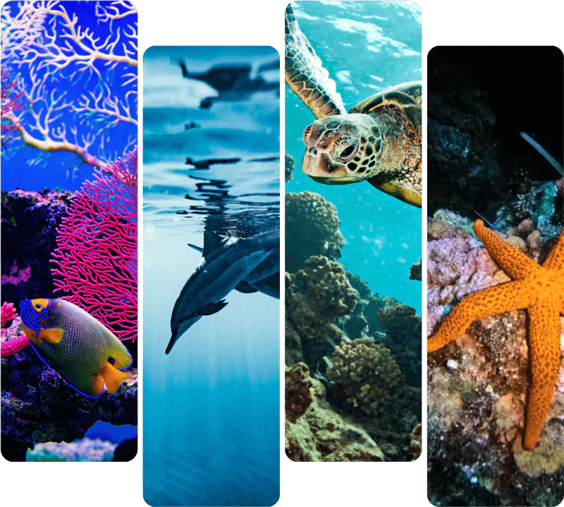
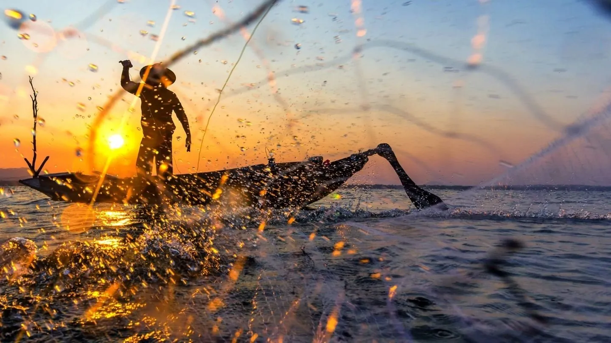
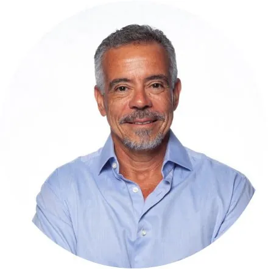
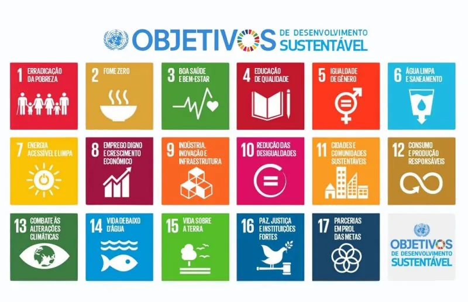

Início / O Instituto
Aproximamos pessoas do oceano para transformar futuros.
O Instituto Gaia Soul nasceu em 2019, em Salvador, com um propósito simples e enorme: promover a consciência ecológica e levar a Cultura Oceânica para toda a sociedade, em especial para crianças e jovens.
Unimos educação, ciência, cultura, tecnologia e bem-estar para transformar conhecimento em consciência e consciência em ação.

O Instituto Gaia Soul é uma organização sem fins lucrativos dedicada à Cultura Oceânica: o entendimento de como o oceano influencia a nossa vida e de como nós influenciamos o oceano.
Nossa atuação nasce na Bahia, um território profundamente ligado ao mar, e chega a escolas, comunidades, empresas e a qualquer pessoa disposta a olhar o oceano de um jeito novo.




Gaia era o nome do veleiro que o Marcelo Telles construiu e com o qual fez travessias pelo oceano. Foi a bordo dele que muitas das histórias, imagens e aprendizados que hoje viram conteúdo educativo foram vividos.
O barco seguiu outro rumo, mas o nome ficou: Gaia, a Terra viva, e Soul, a alma que nos liga a ela. Um lembrete de que o planeta e as pessoas são uma coisa só.
O que nos move e para onde queremos navegar.
Informar, sensibilizar e engajar as pessoas para a Cultura Oceânica e a difusão da Oceanoterapia.
Sensibilizar, até 2030, a consciência ecológica de pelo menos 100 mil pessoas, com nossos conteúdos, projetos e iniciativas sociais.
Nossos projetos seguem os 7 princípios da Cultura Oceânica, com apoio da UNESCO e da Década da Ciência Oceânica.
O Instituto Gaia Soul é uma associação sem fins lucrativos, registrada como Gaia Soul Instituto de Proteção e Educação Ambiental (CNPJ 34.941.993/0001-18). Nossa sede funciona na Mata Quântica, na Baía do Iguape, e o escritório administrativo fica em Salvador.
Nossa atuação é guiada pelos valores de ética, respeito, transparência, conscientização e preservação.
“Só cuidamos do que conhecemos. Por isso a nossa missão é aproximar as pessoas do oceano.”


Da Baía de Todos-os-Santos à Mata Quântica, onde funciona a nossa sede.


 100 hectares preservados
100 hectares preservadosA maior baía do Brasil, protegida como APA. É daqui que o nosso território começa.
RESEX onde vivem comunidades quilombolas e pesqueiras, com quem construímos esporte, educação e apoio às famílias.
100 hectares de Mata Atlântica preservada, em processo para se tornar RPPN.
Nossos projetos conversam com a Agenda 2030 da ONU e com a Década da Ciência Oceânica.



Cada pessoa que embarca leva a Cultura Oceânica mais longe: para mais escolas, mais comunidades e mais gente que nunca viu o mar de perto.